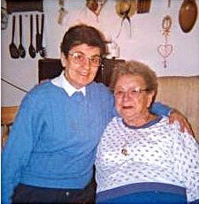
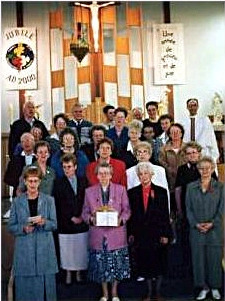
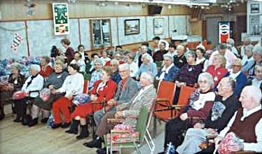
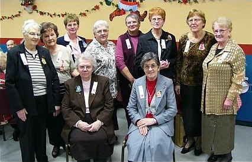

Équipe de la Joie
Notre mission
Notre mission est d’apporter de la joie aux personnes de notre entourage, surtout celles qui sont seules ou malades. Nous avons besoin de bénévoles pour remplir ce mandat.
Comment ? En soulignant les fêtes (Noël, Pâques, anniversaires), visites, téléphones et toutes initiatives pour contrer l’isolement de nos aînés.
Si vous êtes intéressé(e)s à joindre l’Équipe de la Joie, vous pouvez donner votre nom au secrétariat au 819-737-2045. Merci !
En janvier 1984, l’abbé Paul-Émile Bilodeau, curé de la paroisse, rassemble quelques personnes et leur confie la responsabilité de visiter les personnes âgées, malades ou seules à la maison. C’est alors que naît L’Équipe de la joie. (Sur la photo ci-contre, prise en décembre 1984, nous retrouvons des membres de l’équipe initiale.)
Actuellement, L’Équipe de la joie comprend 32 membres, tant hommes que femmes. Chacun d’eux visitent régulièrement quelques personnes à domicile. Ce faisant, 125 paroissiens et paroissiennes sont ainsi visités.
(Sur la photo ci-contre, prise en mars 1997, nous retrouvons un membre de l’équipe, Sœur Annette Houde, lors d’une visite rendue à Mme Pauline Martel.)
(Sur la photo ci-contre, prise en juin 2000, à l’occasion de l’Onction des malades, nous retrouvons une partie des membres de L’Équipe de la joie.)
Chaque année, deux activités majeures sont organisées par L’Équipe de la joie. Une première a lieu au début de juin : la célébration communautaire de l’Onction des malades. Le transport des personnes à l’église est assurée par les Chevaliers du Colomb du Conseil 3090 et par des membres de l’équipe. Au terme de la célébration, un goûter préparé par des membre de l’équipe est servi aux personnes venues recevoir l’Onction des malades.
La seconde activité a lieu en décembre. Grâce à de généreux commanditaires, un souper fraternel, dans une atmosphère du temps des Fêtes, rassemble un grand nombre de personnes visitées. De plus, à cette occasion, un cadeau est remis à chacune d’elles.
Pour 2000-2001, les responsables de L’Équipe de la joie sont les personnes suivantes : Mme Émilienne Blouin, présidente; Mme Cécile Fontaine, vice-présidente; Sœur Éliette Lapointe, ss.cc., secrétaire; M. Louis Boudreault, trésorier; Mme Renée Dubreuil, responsable de l’équipe des téléphones.
(Sur la photo ci-contre, prise en juin 2000, à l’occasion de l’Onction des malades, nous retrouvons une partie des membres de L’Équipe de la joie.)
Vingt ans déjà!
Le 6 décembre 2004, l’Équipe de la Joie célébrait ses 20 ans d’existence à la salle des Chevaliers de Colomb, lors du souper fraternel annuel. Sur la photo ci-dessous, nous voyons les membres qui y œuvrent depuis ses tout débuts.

Debout et dans le sens habituel : mesdames Gisèle Dupuis, Renée Dubreuil, Émilienne Blouin, Gisèle Dubé, Gaby Beauvais, Rose-Alice Bélisle, Hélène Martin, et Anita Bélanger. Assises : Sœurs Éliette Lapointe et Annette Houde.
La mission des membres de L’Équipe de la joie est d’allumer une lumière dans la vie des personnes visitées et ce, à la manière de Mère Teresa dans l’exemple suivant :
« Nous avons trouvé un homme qui vivait d’une façon vraiment indigne d’un être humain, raconte Mère Teresa. Je m’approchai et essayai d’entamer la conversation. Tout d’abord, je lui dis : “Je vous prie, laissez-nous nettoyer votre maison, faire votre lit et un peu de ménage.” Il me répondit sèchement : “Je suis bien comme ça, laissez-moi tranquille!” J’ai insisté : “Vous verrez que vous serez bien mieux quand nous aurons fait le ménage.” Il finit par accepter...
« Je m’aperçus qu’il y avait là une jolie lampe, qui disparaissait toutefois sous la poussière et la saleté. J’ai demandé : “Vous n’allumez jamais cette lampe?” Il a riposté : “Et pourquoi faudrait-il que je l’allume? Il ne vient jamais personne ici, je n’ai jamais de visites. Pour moi tout seul, je n’ai pas besoin de lumière!” C’est alors qu’une inspiration me poussa à lui dire : “Si les Sœurs venaient vous voir, est-ce que vous l’allumeriez pour elles?” — “Bien entendu, je le ferais.”

« De retour à la maison, je racontai la chose aux Sœurs, et elles se mirent à aller le voir le soir, à la nuit tombante. Il tint parole, et chaque soir, il alluma. Quelques mois plus tard (il vécut encore deux ans), il m’envoya par les Sœurs un mot dans lequel il me disait : “Je vous certifie, ma chère amie, que la lumière que vous avez allumée dans ma vie, brille toujours” » (Mère Teresa par elle-même, Paris, Éditions Médiaspaul, 1994, p. 103-104)